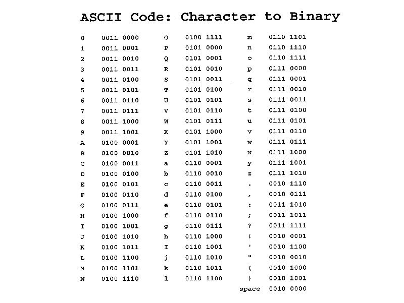

As computer programmers, we are used to using high level languages like Java, Python, and C to communicate set of complex instructions to our computer. We know that they get translated down to binary code (also known as machine language) to communicate with the machine. Yet, what happens in between?
High level languages are first converted to assembly language, a set of lower level languages that give more direct instructions to machines through a set of finite instructions. Then, assembly language is converted to machine language, a language of zeros and ones that instruct specific pieces of hardware to so do specific actions. So why do all this convert? Machine language is not easily human readable. It requires painstaking record keeping of values, formats, machine locations, state, and so much more. It also it not portable, meaning the same code cannot run on a different machine, because the code generated is machine specific. For example, if you wanted to save a sentence, you would first need to know what the ASCII characters translate to in binary.
